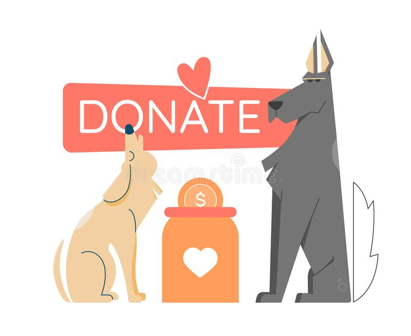

Una voz para nuestras mascotas
Home
Campañas
Productos
Contribuir
Voluntarios
Contácto
Login
Maneras de Contribuir
Donaciones
Alimentos
Mantas
Juguetes
Camas
Elementos de aseo
Elementos de higiene
Medicamentos
Jaulas
Accesorios para mascotas
Otras Maneras de Ayudar
Ser voluntario
Apadrinar
Acogida temporal
Donar dinero y participar en eventos solidarios
